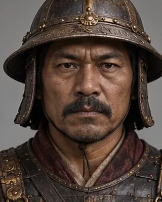
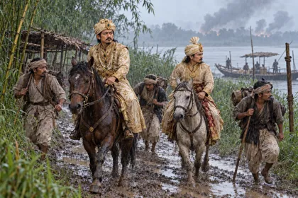

1819 · Burmese general

Commanded Bodawpaya's second invasion in 1819; after the Burmese victory he reinstalled Chandrakanta Singha.
Record confidence: medium.
Open interactive profile

February 1819